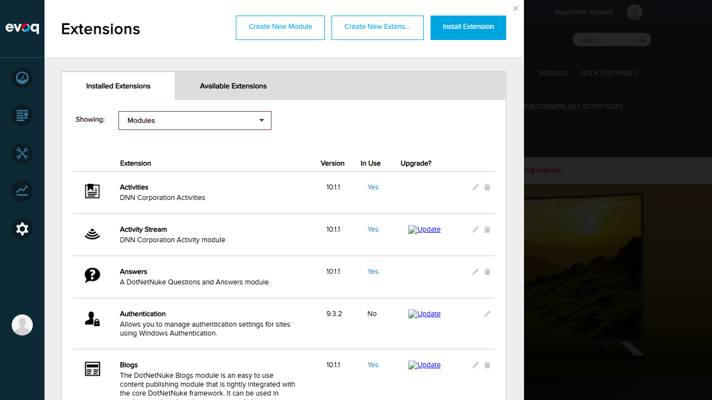
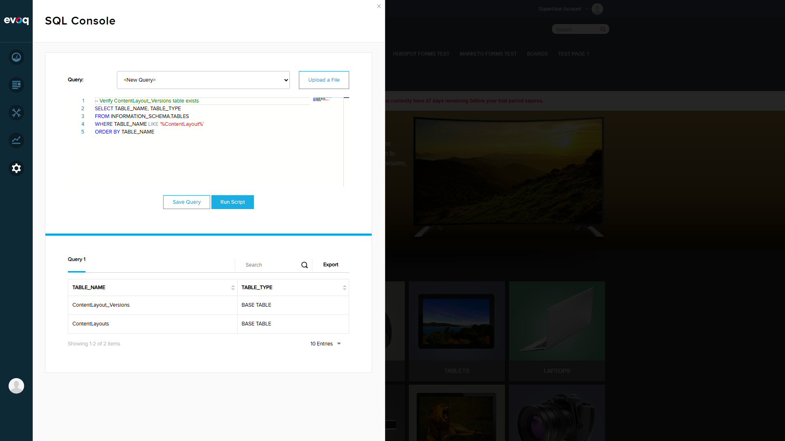

Description: Database schema and migration scripts for content layout data persistence.
UI Location: Database Installation/Upgrade
Dependencies: SQL Server Database
Test Results Summary
Test Scenario
Status
Notes
Fresh Installation Verification
PASS
Extension installed correctly
Table Creation Verification
PASS
ContentLayout_Versions and ContentLayouts tables exist
Stored Procedures Verification
PASS
All 6 stored procedures created successfully
Table Structure Verification
PASS
All 8 columns match SQL script specification
Upgrade Script Review
REVIEWED
Script includes IF NOT EXISTS checks for safe upgrades
Uninstall Script Review
REVIEWED
Script properly drops all objects in correct order
Test Scenario 1: Fresh Installation Verification
Objective: Verify that the ContentLayout extension is properly installed.
Steps Taken:
Logged in as SuperUser (host/Pass123456)
Navigated to Settings > Extensions
Located ContentLayout module in the installed extensions list
Verified extension details and version
Result:PASS
Findings: ContentLayout extension is installed with version 10.1.1, marked as "In Use: Yes"
Screenshot - Logged In State:
Screenshot - Extensions List:

Screenshot - Content Layout Extension Details:
Test Scenario 2: Table Creation Verification
Objective: Verify that the ContentLayout tables were created correctly in the database.
Steps Taken:
Navigated to Settings > SQL Console
Executed query to list ContentLayout tables
Verified both tables exist as BASE TABLEs
SQL Query Used:
SELECT TABLE_NAME, TABLE_TYPE
FROM INFORMATION_SCHEMA.TABLES
WHERE TABLE_NAME LIKE '%ContentLayout%'
ORDER BY TABLE_NAME
Result:PASS
Table Name
Table Type
ContentLayout_Versions
BASE TABLE
ContentLayouts
BASE TABLE
Screenshot:

Test Scenario 3: Stored Procedures Verification
Objective: Verify that all ContentLayout stored procedures were created.
Steps Taken:
Executed query to list ContentLayout stored procedures
Verified all 6 procedures exist with correct creation dates
SQL Query Used:
SELECT ROUTINE_NAME, ROUTINE_TYPE, CREATED
FROM INFORMATION_SCHEMA.ROUTINES
WHERE ROUTINE_NAME LIKE '%ContentLayout%'
ORDER BY ROUTINE_NAME
Result:PASS
Stored Procedure Name
Type
Purpose
ContentLayout_Migration_UpdatePaneName
PROCEDURE
Updates pane names during migration
ContentLayout_Versions_Add
PROCEDURE
Inserts new content layout version
ContentLayout_Versions_Delete
PROCEDURE
Deletes a content layout version
ContentLayout_Versions_Get
PROCEDURE
Retrieves a specific version
ContentLayout_Versions_GetAll
PROCEDURE
Retrieves all versions for a module
ContentLayout_Versions_Update
PROCEDURE
Updates an existing version
Screenshot:
Test Scenario 4: Table Structure Verification
Objective: Verify the ContentLayout_Versions table structure matches the SQL script.
Steps Taken:
Executed query to list all columns in ContentLayout_Versions table
Compared results with SQL script specification
SQL Query Used:
SELECT COLUMN_NAME, DATA_TYPE, IS_NULLABLE, CHARACTER_MAXIMUM_LENGTH
FROM INFORMATION_SCHEMA.COLUMNS
WHERE TABLE_NAME = 'ContentLayout_Versions'
ORDER BY ORDINAL_POSITION
Result:PASS
Column Name
Data Type
Nullable
Max Length
ModuleId
int
NO
-
Version
int
NO
-
ColumnSizes
nvarchar
NO
50
ColumnCssClasses
nvarchar
NO
256
AreCustomColumnSizes
bit
NO
-
IsPublished
bit
NO
-
CreatedOnDate
datetime
NO
-
LastModifiedOnDate
datetime
YES
-
Note: Table includes Primary Key on (ModuleId DESC, Version DESC) and Foreign Key to Modules table with CASCADE DELETE.
Screenshot:
Test Scenario 5: Upgrade Script Review
Objective: Review the 08.02.00.SqlDataProvider script for proper upgrade handling.
Result:REVIEWED
Code Review Findings:
Script uses IF NOT EXISTS checks before creating tables
Stored procedures are dropped and recreated to ensure latest version
Migration column added only if not already present
Safe for repeated execution (idempotent)
Key Code Pattern:
IF NOT EXISTS (SELECT * FROM sys.objects
WHERE object_id = OBJECT_ID(N'{databaseOwner}[{objectQualifier}ContentLayout_Versions]')
AND type in (N'U'))
BEGIN
CREATE TABLE {databaseOwner}[{objectQualifier}ContentLayout_Versions]
...
END
Test Scenario 6: Uninstall Script Review
Objective: Review the Uninstall.SqlDataProvider script for proper cleanup.
Result:REVIEWED
Code Review Findings:
Script drops stored procedures before dropping table (correct order)
Uses IF EXISTS checks to prevent errors on missing objects